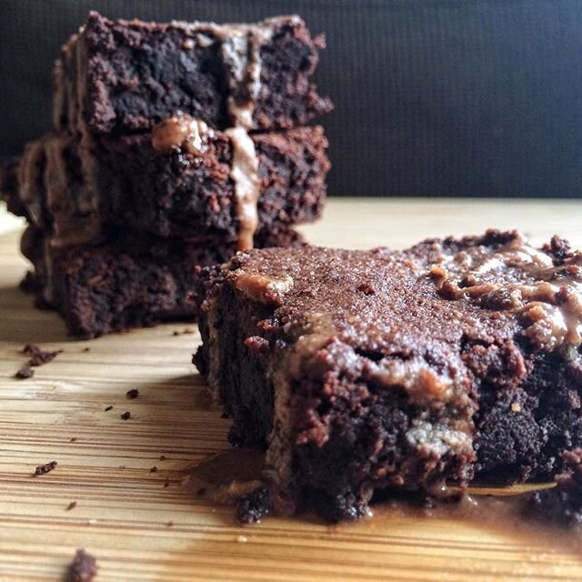
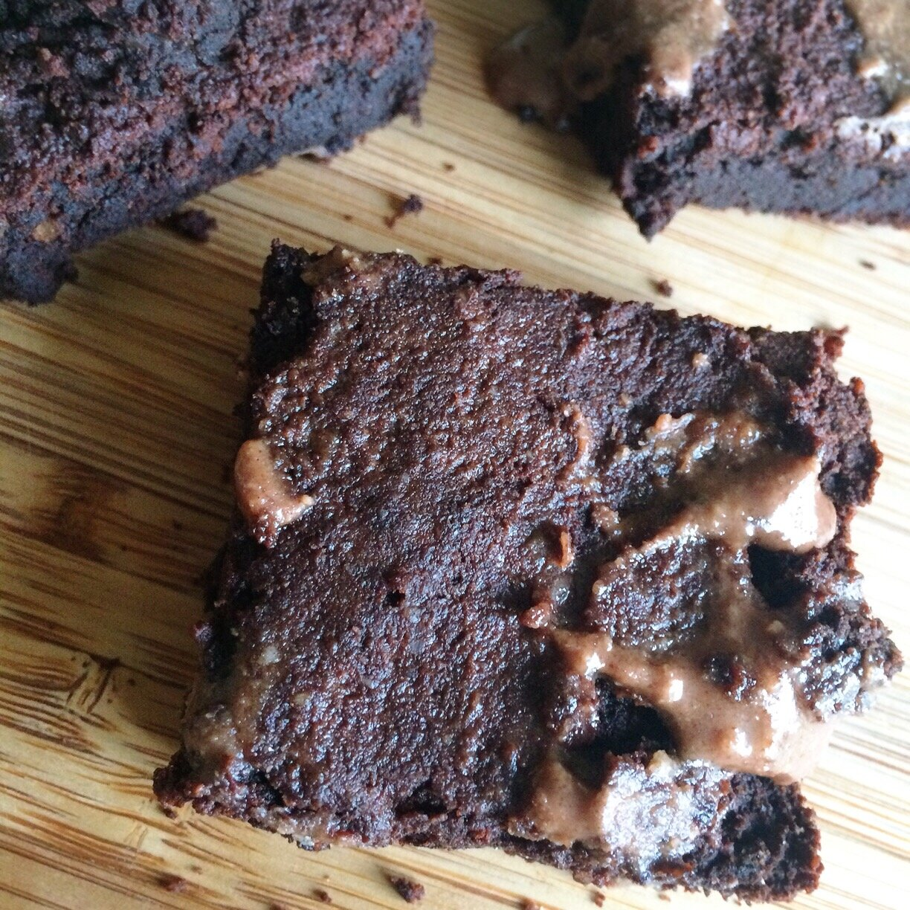

Fudgey Wudgey Brownies (vegan, gluten free)

Baking, why you so fun?? I wanted some super fudgey brownies and super fudgey brownies is what I got. I love it. They're sooo good topped with chocolate brownie coconut butter because that just makes the most sense you knowww. I'm about it. Perfect treat after a morning bike ride.
I am so glad I invested in this road bike!! It clears my mind SO nicely and it's not harsh on my body at all like going to the gym is. I got the bike hoping to find ways to exercise around my fibromyalgia pain, and it's PERFECT. I highly recommend it if you're also looking for low-impact exercises. There's nothing like forgetting everything for 1-2 hours and just enjoying the outdoors. I'm still not 100% comfortable around traffic with my clip-in shoes/pedals, so I like to find the most secluded loops to go on. Like. So awkward in traffic. My first time with the clip-in pedals (it comes with regular pedals you wear tennis shoes with), I went with my boyfriend just incase I fell. Andddd... I fell. I was fine until we got to a stop sign. And sure enough - first stop we got to - I fell. I unclipped my right foot just fine. Put my foot on the ground with my left foot still clipped in (all good so far), AND FELL TO THE LEFT. Queen of awkward. But luckily that hasn't happened since ._. It's fun to see how much further or faster I can go each time. Hills are rough, but I'm getting better and getting over the fear of not being able to do it. Sucks though because it's getting cold D; and so I want to go on my bike less and just go to the gym because I'm a wimpppp. WAhhhhh. I think we're going to get an indoor bike trainer though so that both of us can still train in the winter. :) He does triathalons and stuff like that so it's a little more important for him to still be able to ride; I just want to for fun :D so yay I'm pro-bike trainer.
Fudgey Wudgey Brownies
Serves: 8
-
1/4 cup coconut flour
-
1/2 cup almond meal
-
1/2 cup unsweetened cocoa powder
-
1/2 cup baking stevia
-
1/2 cup unsweetened applesauce
-
1/4 cup coconut oil
-
1/4 cup almond milk
-
1/2 tsp baking powder
Mix all of your ingredients in a bowl. Evenly spread in a 9x4 dish sprayed with nonstick spray. Bake at 375 F for 22-27 minutes (or until the top crisps). Cut into 8 pieces and enjoy!
132 cals each; 12 g fat, 8 g cabs (4 g fiber), 2.5 g protein
